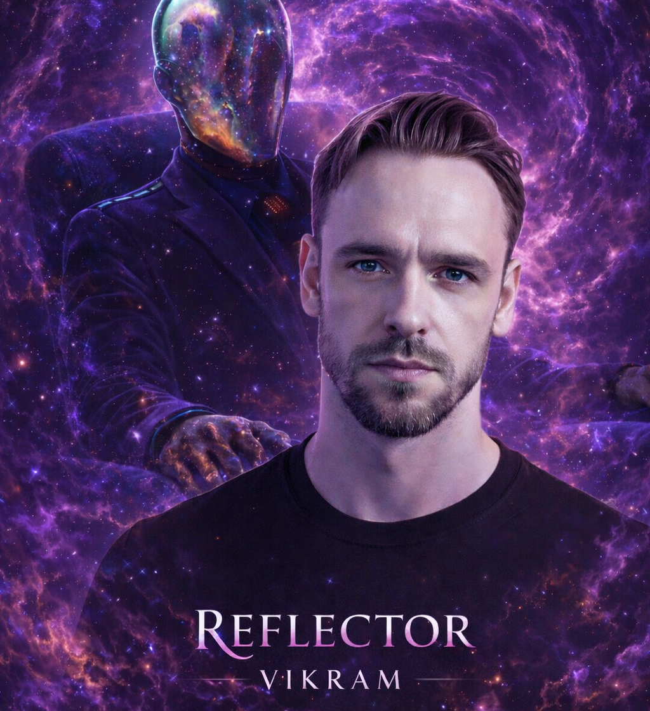
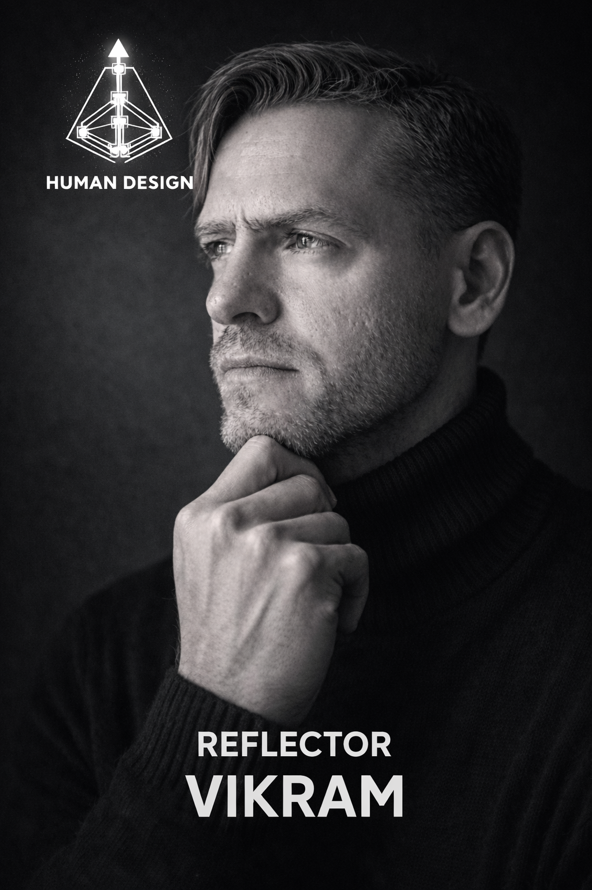
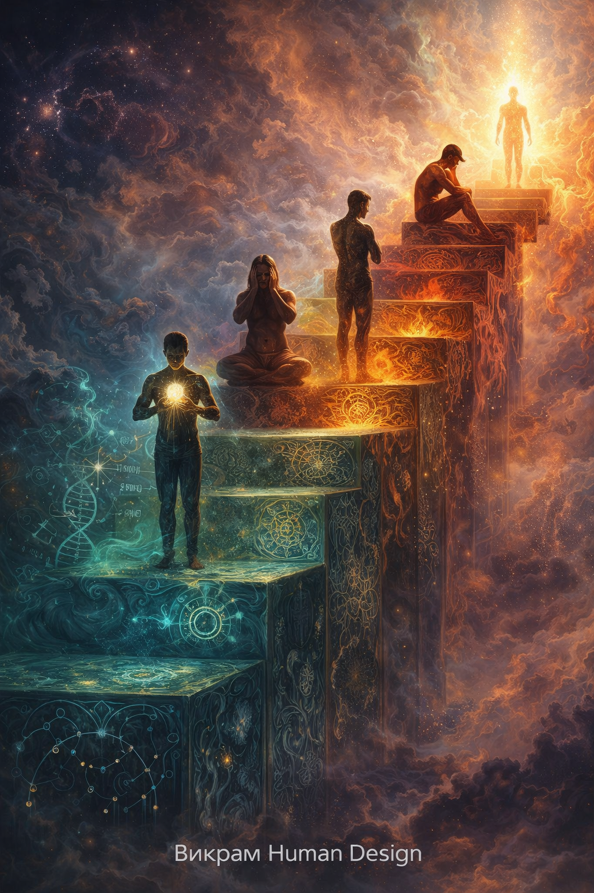

Безопасность и переезды
Стоит ли уезжать? Куда переехать с детьми?
Human Design — Гештальт - Астрология
Мои показатели с социальных сетях
✓ Конфиденциально · ✓ Ответ в течение 24 часов
Стоит ли уезжать? Куда переехать с детьми?
Как не потерять накопления? Когда менять работу?
Как сохранить семью? Как понять предназначение?
13 ключевых аспектов твоей уникальной природы
Твоё идеальное место силы — где ты будешь в ресурсе и безопасности.
Твоя персональная система питания для энергии и здорового веса.
Твои ключи к близости и страсти без драм и манипуляций.
Ваш индивидуальный способ зарабатывать деньги и реализовываться в материальном мире.
Никогда не болеть "чужими" болезнями и избегать самоуничтожения своего тела.
1.250 гривен
Записаться1.300 гривен
Заказать прогноз2.550 гривен
Выбрать темыДемо-версия моей методики анализа. Полный разбор — в персональной консультации.

3 шага от вопроса до плана безопасности

Викрам — аналитик системы Дизайна Человека, гештальт-психолог
Опыт работы более 15 лет
ПРОСТО НАЖМИ ТУТ
(мой телеграм)
Полный список вопросов
Астрология
Расчёт для Киева · обновляется ежедневно

Human Design
25 вопросов · шкала 0–3 · результат в процентах
Займёт около 3 минут
Пиши — отвечу быстро